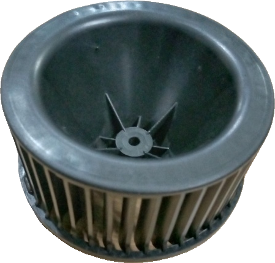

Vision
Our Vision
“Quality Tooling with Affordable Price”
- Manufacturer of plastic injection moulds
- High quality, every time
- Delivery on time
- Continuous business with delighted customers
Sri Kamatchi Toolings builds compact plastic injection moulds for automobile and home appliance parts, planned for robotic handling and proven in our own moulding shop.





“Quality Tooling with Affordable Price”
First time right, superior part quality.
People and process, held together.


Started in 2021 in Thirumudivakkam by a tool-room professional with over 23 years in mould making, Sri Kamatchi Toolings focuses on compact mould design, moulds planned for robotic handling, and continual improvement in the skill of moulds.
Our founder brings over two decades of tool-room knowledge to every mould that leaves the floor.
Fanuc-controlled machining centres.
For deep ribs and sharp corners.
In-house trials and production.
From 80 T to 450 T, so any mould can be proven at the right tonnage.
Compact mould design, with the part, gate and cooling planned for robotic take-out before steel is cut.
Cavity and core are machined on our VMCs, burned on EDM, ground and fitted on our 2 ton crane floor.
The mould opens, the ejector pins push the part off the core, and we check dimensions and looks on our own press.
The aim is a part that fits 90% in T-0, so the mould reaches you ready to run, as promised.
From a part drawing to a proven mould, plus the work that keeps running moulds in production.
Plastic injection moulds for interior and exterior parts of automobiles and home appliances, designed compact and built to run on robots.
Engineering change notes carried into existing moulds quickly and cleanly, so your part stays current without a new tool.
Worn or damaged moulds restored on our VMCs, EDMs and grinders and brought back to running condition.
Prototype tools to prove a part design early, with trials on our own press or trusted partner presses from 80 T to 450 T.
Moulds made from hardened steel for long production runs, with heat treatment and texturing through trusted partners.
Mechanisms that need care, such as unscrewing moulds and rack-and-pinion concepts for threaded and complex parts.
Spare machining capacity on three modern VMCs with Fanuc controls, available for outside jobs.
Modern VMCs, ZNC EDMs and two injection presses, all under one roof.
 VMC 1
VMC 1Installed 9 July 2021. Equipped for mould making, with die and mould feature software added to the Fanuc control. Turbulent-flow cooling clears chips.
 VMC 2
VMC 2The big-bed machine for large cavities and cores, with a spindle chiller to hold accuracy on long cuts.
VMC 3Mid-size machining centre equipped for mould making, with die and mould features in the control.
 EDM x 2
EDM x 2Two ZNC EDM machines for burning deep ribs, sharp corners and inserts that milling cannot reach.
 Added Mar 2025
Added Mar 2025Our own moulding machine, so every mould is tried and tuned in-house before it ships. Bars show tie-bar spacing and maximum mould height.
 Added Jun 2026
Added Jun 2026A second in-house press for smaller moulds, added in the fourth week of June 2026. Bars show tie-bar spacing and maximum mould height.
Tap any part to see it larger.


Tier 1 suppliers and OEMs across automotive and home appliances.


Share your part drawing or sample. We will study it and come back with a compact, robot-ready mould plan.